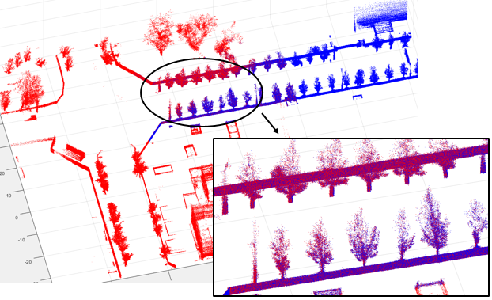
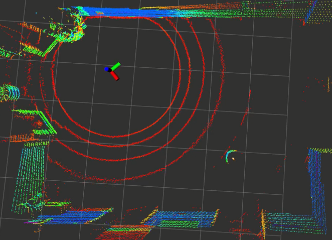
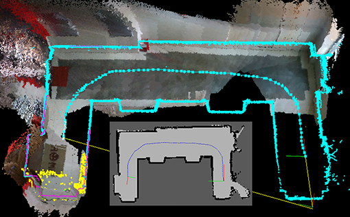
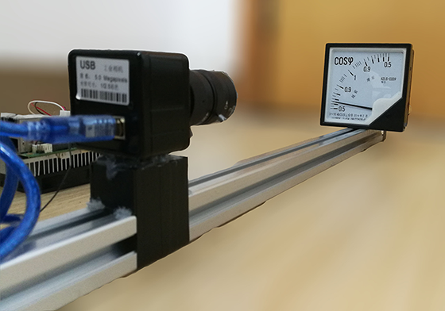
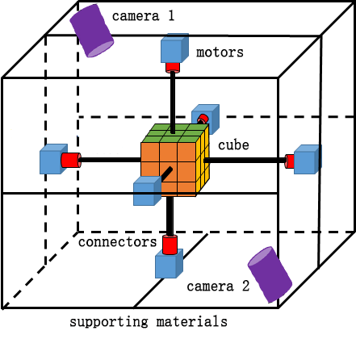
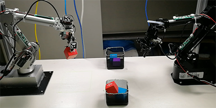
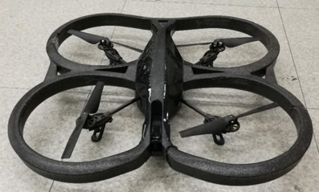

|

|
AutoMerge: Automatic Multi-agent Cooperated Map Merging System
AirLab, Carnegie Mellon University
(as Research Intern, advisor: prof. Sebastian Scherer)
Dec. 2021 - present
The project focuses on merging large-scale 3D point cloud maps without any prior information about their relative
transformation. These large-scale point clouds, which are usually generated using SLAM with 3D LiDARs in the outdoors, differ
a lot from the ones created by 3D scanners or RGB-D cameras. The noise becomes larger and the points are sparser, making
most descriptors designed for point cloud registration fail. Furthermore, the issue of time consumption must be taken into
consideration as the scale of maps becomes increasingly larger. To handle it, we propose a novel method that selects key points
at a higher sematic level rather than choose them randomly as most current works do. Then features are extracted and
descriptors are constructed by taking their neighbors into account. For details, please refer to our paper.
|
|

|
LiDAR Inertial based Self-Localization and Target Perception for Robots
UAV Lab, Tsinghua University (as researcher, advisor: prof. Yisheng Zhong)
Jan. 2021 - Jul. 2021
The abilities of self-localization and target perception for robots are of vital importance since they are the basic of other
upper level functions, such as path planning, obstacle avoidance and navigation. Although some methods can provide
the robot with localization results directly, they are somehow with weaknesses. For example, the use of external visual
localization system may be unrealistic in practice, and GPS/RTK is rarely working in indoor enviroment. Thus, robots should
be able to locate themselves with the sensors they carry. The capability of target perception is also signifiant in some tasks
such as searching, game playing and autonomous driving. It is unreasonable to expect information sharing from the opponents
in real scenes like most theory analyses do. In this project, we leverage 3D LiDAR and IMU to provide robots with the abilities of
self-localization and target perception in pursuit-evasion games. The results show that our method is accurate and effective
in both indoor and outdoor enviroment. For more details, please refer to our papers.
|
|

|
Intelligent and Unmanned Indoor Navigation Robot
UAV Lab, Tsinghua University (as researcher, advisor: prof. Yisheng Zhong)
Jan. 2020 - Sept. 2020
The research in this project focuses on robot sensing, understanding and interaction with the unknown environment by itself. Some key technologies are
utilized, such as SLAM, multi-sensor fusion, robot navigation, self-exploration, object detection etc. What we want to do is making robots as intelligent as
human in understanding its enviroment, especially in an unknown area with no human instruction. Specific tasks include exploring the enviroment autonomously and
building a map, dynamic obstacles avoidance, self localization, object picking by robot arm, etc.
|
|

|
Vision-based Automatic Reading System for Pointer Meters
BitaAI Lab, Tongji University (as main researcher, advisor: prof. Qi Kang)
Nov. 2018 - Aug. 2019
This project aims to build an automatic reading system for pointer meters. The system is comprehensive, including image capture device, core reading algorithm and reading
management GUI. Unlike other reading systems, the core reading algorithm applied in ours was proposed by our team (see [pub]), which is able
to process both uniform and non-uniform scale meters (meters whose scales are unevenly distributed) regardless of their shapes. This ability undoubtedly enlarges the range of
meters in application. In some circumstances such as power plant, it is even critical because most of their meters are of non-uniform scales, e.g. power factor meter and large
measurement Ampere meter. Images are captured by an self-designed embedded device and transmitted through wireless network. Besides, reading management GUI is also provided
for monitoring, recording and controlling the whole system.
|
|

|
Fast and Robust Rubik's Cube Solver with Illumination Adaptability
Haowen Lai, Jinshu Chen, Bei Zhang (advisor: prof. Youling Yu)
Sept. 2018 - Jan. 2019
[ abstract]
[ code]
In this project, we made a robot (though it could not walk or move) that can restore 3-order Rubik's Cube and is robust to the enviromental illumination changes. Its robustness results from
the color recognition algorithm that differs from traditional ones which simply apply threshold to HSV color space to segment color. The problem is that a fixed threshold cannot handle
various illumination conditions. To overcome the weakness, we apply machine learning techniques to enable the robot to learn the threshold according to its current enviroment. That improves
its adaptability and makes user get rid of parameters tuning all the time. Besides, the controlling sequence to the motors for restoration is also optimized, e.g. the opposite motors can move
at the same time without conflict, thus shortening the time used.
|
|

|
Self-Learning Model-Free Robot Arm System for Grabbing and Classification
Innovation Base Laboratory (as main researcher and team leader)
Competition: Intel Cup ESDC 2018. National first prize (top 8% of 164 teams).
Jan. 2018 - Aug. 2018
We presented a robot arm system for grabbing and classification in this project. As we know, for most control algorithms of robot arms, models need to be built before the arms can precisely
move to a certain position. It is not an easy job especially when your robot arms are of different types. Even for the same type, it is hard to acquire an accurate model due to the manufacturing
errors. So we use deep learning to make the arm learn the model by itself through practicing. The location of its joints acquired by the visual positioning module is used as training samples
together with the control values of each motors. To Illustrate the adaptability and effectiveness of our approach, the algorithm is applied to two different robot arms for grabbing and classification
tasks through collaboration. If the classification features are blocked by the clip of one arm when holding the object, the arm will pass it to another and let it observes the features.
|
|

|
Follow You up: Selfie UAV with Gesture Interaction
National Innovation Project (as team leader, advisor: prof. Fanhuai Shi)
Apr. 2017 - Apr. 2018
This project focused on how to provide convenient UAV control and better user experience in selfie. In our research, the remote controller
is discarded. Instead, users control the UAV for a certain task such as stopping following, resuming and landing through hand gestures.
The gesture recognition module first segments hand area by color feature, then uses neural network to infer its meaning. The segmentation procedure
dramatically reduces the time compared to using CNN to infer on a 3-channals color image directly, and requires less training samples.
Another distinguishing characteristic is that our UAV utilizes a depth camera to locate the user and will automatically follow the person when moving, with
no worry of getting lost. Other functions include automatic finding best selfie position, group shots and video recording, etc.
|